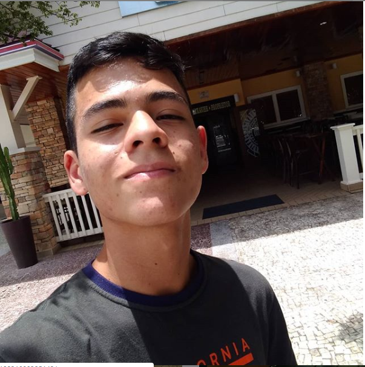
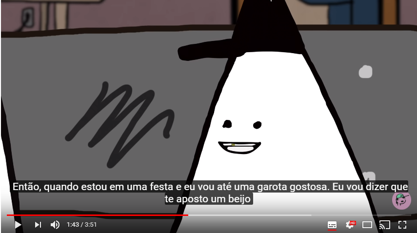

Qualificações acadêmicas
Histórico de Experiência Acadêmica
Histórico de Experiência Profissional
Idiomas (spoken/written/reading)
English:(Avançado/Avançado/Avançado)-Icbeu- Manaus
Portuguese: Native
Cursos relevantes
Outras áreas de interesse
Maior ato de Coragem realizado em vida
Qual o foi o ato de Coragem?
Eu já desafiei a ex-diretora da escola
Quando foi o ato de Coragem?
No primeiro ano do ensino médio
Como foi o ato de coragem?
Eu tinha sido acusado injustamente de agressão a um garoto e por causa disso
queriam me suspender, mas eu comecei a falar que ela tava errada que ela não
podia provar isso então eu fui absolvido.
Maior medo em vida
Por que tem esse medo?
Quando eu era criança eu assiti um filme de terror onde uma mulher estava
dormindo e do nada um monte de inseros começou a sair do nariz, boca e
orelhas dela, desde então não sou muito fã de insetos.
Descreva o dia que teve mais sorte na vida
Uma vez quando viajei pra Fortaleza, eu tava na praia com meus pais, então
a onda
começou a me puxa pro meio do mar eu não conseguia voltar pra margem,
aí apareceu um
cara aleatório e me puxou de volta pra margem foi muita sorte
esse cara estar lá.
Gosta de animal de estimação? Descreve-os, referencie suas
raças em sites da Web
Sim, possuo um gato e um cachorro, o nome deste é Barney(chow-chow)
e daquele é Fred.
O Barney adora
sair pra passear e gosta de muito carinho na barriga e também
gosta de comer muito bife,
já o Fred não gista muito de carinho mas dá pra fazer
ele ama comer fígado e ás vezes é
muito carinhoso.
Qual seu time de coração?
Meu time de coração é o Interncional
comecei a torcer pra ele por causa do meu tio que
sempre me levava pra sair e me dava as camisas do inter
era sempre legal assistir o famoso
gre-nal com ele e o meu outro tio que torce pro Grêmio.
Você tem herois? Quem seria? Por que gosta tanto dele?
Tenho sim, seria o Homem de Ferro, pois ele consegue aprender as coisas muito rápido sem
precisar
se esforçar muito, um dia queria ser que nem ele aprender só de olhar.
Informe alumas músicas favoritas suas
Alt-J - Breezeblocks
Gorillaz - Feel Good Inc
The Kooks - Seaside
Informe alguns videos do youtube favoritos seus

Você tem sonhos? Pode enumerar alguns?
Em relação a FMM, por que escolheu o curso de Informática
Pois quando eu estava me preparando para o processo seletivo sempre me disseram que eu
era bom
em lógica e que eu devia tentar informática e estavam certo, pois hoje eu gosto de progra-
mação.
Fique a vontade para acrescentar informções, se preferir.